Chapter 6 Baselining
This chapter presents a workflow for preparing, summarizing and visualizing data collected through farm surveys (using KoboToolBox), providing an initial characterization of the farming systems under study.
Download a sample of the data generated from the questionnaire presented in the previous chapter here: https://github.com/FBaudron/book_standardized_workflows/blob/main/06-baselining/BASELINE%20DATA.xlsx. This dataset will be used in the following workflow.
A standalone R script containing the full workflow is available at the following link: https://github.com/FBaudron/book_standardized_workflows/blob/main/06-baselining/baseline.R.
6.1 Data preparation
We load the necessary packages and import the data in R.
if (!require("openxlsx")) install.packages("openxlsx")
if (!require("janitor")) install.packages("janitor")
if (!require("dplyr")) install.packages("dplyr")
if (!require("geodata")) install.packages("geodata")
if (!require("terra")) install.packages("terra")
if (!require("ggspatial")) install.packages("ggspatial")
if (!require("ggplot2")) install.packages("ggplot2")
if (!require("tidyterra")) install.packages("tidyterra")
if (!require("data.table")) install.packages("data.table")
if (!require("tidyr")) install.packages("tidyr")
if (!require("gtsummary")) install.packages("gtsummary")
library(openxlsx)
library(janitor)
library(dplyr)
library(geodata)
library(terra)
library(ggspatial)
library(ggplot2)
library(tidyterra)
library(data.table)
library(tidyr)
library(gtsummary)
path = "Data"
data = read.xlsx("BASELINE DATA.xlsx")6.1.1 Data cleaning
This section provides a number of steps to clean the data extracted from KoboToolBox and produce a dataset that can be used for analysis.
We first pass the dataframe through the function clean_names() of the R package janitor (Firke 2024), which makes names unique, converts names to lower cases, replaces spaces, special characters, and punctuation with underscores, etc.
data = clean_names(data)District and wards were recorded separately for farms previously interviewed and for farms newly interviewed. Therefore, we merge the 2 District variables and the 2 Ward variables, keep the merged columns only, and remove the row ‘Has this farm already been interviewed earlier or is this a new farm?’
data$district = ifelse(is.na(data$district), data$district_2, data$district)
data$ward = ifelse(is.na(data$ward), data$ward_2, data$ward)
data = data[, -c(3, 6:7)]We merge the factors ‘Ward 3’ and ‘Ward 3 9 12 17’ of the variable ‘ward’.
data$ward = ifelse(data$ward == "Ward 3", "Ward 3 9 12 17", data$ward)
table(data$ward)
Ward 2 Ward 3 9 12 17
134 136 For some variables, we extract the last part of the variable name and make it the new variable name.
# names(data)[c(7:10, 54:62, 68:85, 95:112)]
names(data)[c(7:10, 54:62, 68:85, 95:112)] = sub(".*_", "", names(data)[c(7:10, 54:62,
68:85, 95:112)])
names(data)[c(7:10, 54:62, 68:85, 95:112)] [1] "latitude" "longitude" "altitude" "precision" "bean"
[6] "cowpea" "groundnut" "lablab" "pigeonpea" "bean"
[11] "pumpkin" "watermelon" "cucumber" "maize" "bean"
[16] "potato" "tomato" "onion" "garlic" "cabbage"
[21] "rape" "kovo" "carrot" "occra" "watermelon"
[26] "cucumber" "butternut" "cane" "banana" "pawpaw"
[31] "nartje" "maize" "bean" "potato" "tomato"
[36] "onion" "garlic" "cabbage" "rape" "kovo"
[41] "carrot" "occra" "watermelon" "cucumber" "butternut"
[46] "cane" "banana" "pawpaw" "nartje" We correct the names for those variables with a composed name, to avoid problems later.
names(data)[54] = "common_bean"
names(data)[59] = "velvet_bean"
names(data)[69] = "common_bean"
names(data)[70] = "sweet_potato"
names(data)[82] = "sugar_cane"
names(data)[96] = "common_bean"
names(data)[97] = "sweet_potato"
names(data)[109] = "sugar_cane"We rename manually other long variables.
names(data)[c(33:49, 65, 92, 173, 177, 187:188, 210, 243)] = c("cropped_area", "fallow",
"maize", "sorghum", "pearl_millet", "finger_millet", "sesame", "groundnut", "tobacco",
"cotton", "potato", "sweet_potato", "sunflower", "soybean", "common_bean", "cowpea",
"roundnut", "ind_garden", "com_garden", "donkeys", "pigs", "bee_hives", "fish_pond",
"main_food_source", "main_income_source")We turn No/Yes columns into 0/1.
# str(data[c(65, 92, 154:168, 188, 192:208, 225:241)])
data[c(65, 92, 154:168, 188, 192:208, 225:241)] = lapply(data[c(65, 92, 154:168,
187, 192:208, 225:241)], function(x) ifelse(x == "Yes", 1, 0))
# str(data[c(65, 92, 154:168, 188, 192:208, 225:241)])We turn some continuous variables into binary ones (0/1).
data$bee_hives = ifelse(data$bee_hives > 0, 1, 0)
table(data$bee_hives)
0 1
242 28 6.1.2 Calculation of new variables
After cleaning the dataset, we calculate a number of variables we will use in further analyses.
First, we calculate the number of elderly family members, the number of adults, the number of young family members, and the family size.
data$elderly = data$total_number_of_adult_males_aged_61_or_more + data$total_number_of_adult_females_aged_61_or_more
data$adult = data$total_number_of_adult_males_aged_25_60 + data$total_number_of_adult_females_aged_25_60
data$youth = data$total_number_of_young_males_aged_15_25 + data$total_number_of_young_females_aged_15_25
data$family_size = data$elderly + data$adult + data$youth + data$total_number_of_children_and_teens_aged_3_14 +
data$total_number_of_infants_of_age_0_to_2We then calculate the total equipment value, assuming a value of 10,000 USD for a tractor, 2,000 USD for a two-wheel tractor, 100 USD for a plough, 150 USD for a cultivator, 500 USD for a scotch cart, 50 USD for a wheelbarrow, 50 USD for a solar panel, and 300 USD for a motorized grinding mill.
data$eq_value = 10000 * data$nb_of_tractors + 2000 * data$nb_of_two_wheel_tractors +
100 * data$nb_of_ploughs + 150 * data$nb_of_cultivators + 500 * data$nb_of_scotchcarts +
50 * data$nb_of_wheelbarows + 50 * data$nb_of_solar_panels + 300 * data$nb_of_motorized_grinding_mill
summary(data$eq_value) Min. 1st Qu. Median Mean 3rd Qu. Max.
0.0 50.0 100.0 360.4 337.5 20000.0 We calculate the area cropped in small grains, in legume crops and in other crops.
data$small_grains_area = data$sorghum + data$pearl_millet + data$finger_millet
data$legumes = data$groundnut + data$soybean + data$common_bean + data$cowpea + data$roundnut
data$other = data$sesame + data$tobacco + data$cotton + data$potato + data$sweet_potato +
data$sunflowerWe ensure that the sum of the areas cropped in maize, in small grains, in legumes crops and in other crops area doesn’t exceed the total cropped area.
data$other = ifelse(data$other > data$cropped_area - data$maize - data$small_grains_area -
data$legumes, data$other, data$cropped_area - data$maize - data$small_grains_area -
data$legumes)We calculate the percentage of total land operated represented by fallow land.
data$prop_fallow = data$fallow * 100/(data$cropped_area + data$fallow + 0.001)
summary(data$prop_fallow) Min. 1st Qu. Median Mean 3rd Qu. Max.
0.00 0.00 0.00 20.01 39.99 99.98 We calculate the percentage of cropped area occupied by non-cereal crops.
data$prop_non_cereals = (data$legumes + data$other) * 100/(data$maize + data$small_grains_area +
data$legumes + data$other + 0.001)
summary(data$prop_non_cereals) Min. 1st Qu. Median Mean 3rd Qu. Max.
0.00 0.00 24.97 29.45 49.98 99.97 We calculate the total cereal production as the sum of maize production and sorghum production, which are the main cereal crops in the area.
data[c(123, 136)][is.na(data[c(123, 136)])] = 0
data$cereal_prod = data$total_maize_production_in_the_season_2021_22_kg + data$total_sorghum_production_in_the_season_2021_22_kg
summary(data$cereal_prod) Min. 1st Qu. Median Mean 3rd Qu. Max.
0.0 250.0 600.0 859.2 1087.5 6000.0 We calculate the total quantity of fertilizer used, and the total quantity of organic amendments - manure and compost - used.
data[c(88:91, 119:123, 132:153)][is.na(data[c(88:91, 119:123, 132:153)])] = 0
data$fertilizers = data$quantity_kg_of_basal_fertilizer_applied_to_cotton_in_the_season_2021_22 +
data$quantity_kg_of_basal_fertilizer_applied_to_groundnut_in_the_season_2021_22 +
data$quantity_kg_of_basal_fertilizer_applied_to_maize_in_the_season_2021_22 +
data$quantity_kg_of_basal_fertilizer_applied_to_sesame_in_the_season_2021_22 +
data$quantity_kg_of_basal_fertilizer_applied_to_sorghum_in_the_season_2021_22 +
data$quantity_kg_of_basal_fertilizer_applied_to_the_garden_in_the_last_12_months +
data$quantity_kg_of_topdressing_fertilizer_applied_to_cotton_in_the_season_2021_22 +
data$quantity_kg_of_topdressing_fertilizer_applied_to_groundnut_in_the_season_2021_22 +
data$quantity_kg_of_topdressing_fertilizer_applied_to_maize_in_the_season_2021_22 +
data$quantity_kg_of_topdressing_fertilizer_applied_to_sesame_in_the_season_2021_22 +
data$quantity_kg_of_topdressing_fertilizer_applied_to_sorghum_in_the_season_2021_22 +
data$quantity_kg_of_topdressing_fertilizer_applied_to_the_garden_in_the_last_12_months
data$manure = data$quantity_kg_of_manure_applied_to_cotton_in_the_season_2021_22 +
data$quantity_kg_of_manure_applied_to_groundnut_in_the_season_2021_22 + data$quantity_kg_of_manure_applied_to_maize_in_the_season_2021_22 +
data$quantity_kg_of_manure_applied_to_sesame_in_the_season_2021_22 + data$quantity_kg_of_manure_applied_to_sorghum_in_the_season_2021_22 +
data$quantity_kg_of_manure_applied_to_the_garden_in_the_last_12_months
data$compost = data$quantity_kg_of_compost_applied_to_cotton_in_the_season_2021_22 +
data$quantity_kg_of_compost_applied_to_groundnut_in_the_season_2021_22 + data$quantity_kg_of_compost_applied_to_maize_in_the_season_2021_22 +
data$quantity_kg_of_compost_applied_to_sesame_in_the_season_2021_22 + data$quantity_kg_of_compost_applied_to_sorghum_in_the_season_2021_22 +
data$quantity_kg_of_compost_applied_to_the_garden_in_the_last_12_months
data$amendment = data$manure + data$compostWe calculate the total number of cattle, goats, small ruminants (sheep and goats) and poultry owned.
data$cattle = data$how_many_adult_indigenous_cattle_do_you_currently_own + data$how_many_improved_beef_cattle_do_you_currently_own +
data$how_many_improved_dairy_cattle_do_you_currently_own + data$how_many_juvenile_cattle_3_yr_old_indigenous_and_improved_do_you_currently_own
data$goats = data$how_many_indigenous_goats_do_you_currently_own + data$how_many_improved_goats_do_you_currently_own
data$small_rum = data$goats + data$how_many_sheep_do_you_currently_own
data$poultry = data$how_many_indigenous_chickens_do_you_currently_own + data$how_many_layer_chickens_do_you_currently_own +
data$how_many_broiler_chickens_do_you_currently_own + data$how_many_guinea_fowls_do_you_currently_own +
data$how_many_turkeys_do_you_currently_own + data$how_many_ducks_do_you_currently_own +
data$how_many_geese_do_you_currently_ownWe convert livestock numbers into Tropical Livestock Units, using a 250 kg live weight value for one TLU (Houérou and Hoste 1977), and assuming poultry to be equivalent to 0.01 TLU, sheep and goats to 0.1 TLU, pigs to 0.2 TLU, donkeys to 0.5 TLU, and all types of cattle to 0.7 TLU (Jahnke 1982).
data$TLU = 0.7 * data$cattle + 0.5 * data$donkeys + 0.1 * data$small_rum + 0.2 *
data$pigs + 0.01 * data$poultry
summary(data$TLU) Min. 1st Qu. Median Mean 3rd Qu. Max.
0.000 0.200 1.280 4.264 5.588 69.590 Similarly, we calculate the total livestock offtake in TLU.
data[c(189:191)][is.na(data[c(189:191)])] = 0
data$offtake = 0.7 * data$number_of_cattle_sold_or_slaughtered_in_the_past_12_months +
0.1 * data$number_of_goats_sold_or_slaughtered_in_the_past_12_months + 0.01 *
data$number_of_indigenous_chicken_sold_or_slaughtered_in_the_past_12_months
summary(data$offtake) Min. 1st Qu. Median Mean 3rd Qu. Max.
0.0000 0.0000 0.0300 0.3817 0.3000 16.0000 We calculate the consumption (0/1) of vegetables, fruits and meat in the 24 hours preceding the interview, and calculte a Household Dietary Diversity Score (HDDS) based on 12 food groups: (1) cereals; (2) white tubers and roots; (3) vegetables; (4) fruits; (5) meat; (6) eggs; (7) fish and other seafood; (8) legumes, nuts and seeds; (9) milk and milk products; (10) oils and fats; (11) sweats; and (12) spices, condiments and beverages (Kennedy et al. 2010).
We replace zero values for HDDS (an impossibility) with missing values.
data$vegetables = data$vitamin_a_rich_vegetables_and_tubers + data$dark_green_leafy_vegetables +
data$other_vegetables
data$vegetables = ifelse(data$vegetables > 0, 1, 0)
data$fruits = data$vitamin_a_rich_fruits + data$other_fruits
data$fruits = ifelse(data$fruits > 0, 1, 0)
data$meat = data$organ_meat + data$flesh_meat
data$meat = ifelse(data$meat > 0, 1, 0)
data$hdds = data$cereals + data$white_roots_and_tubers + data$vegetables + data$fruits +
data$meat + data$eggs + data$fish_and_seafood + data$legumes_nuts_and_seeds +
data$milk_and_milk_products + data$oils_and_fats + data$sweets + data$spices_condiments_beverages
data[which(data$hdds == 0), ] = NA
summary(data$hdds) Min. 1st Qu. Median Mean 3rd Qu. Max. NA's
1.000 2.000 3.000 3.147 4.000 8.000 4 We calculate the proportion of the year the monthly food security is moderate or high, as a proxy of food security.
data$food_security = rowMeans(data[212:223] != "Low")
summary(data$food_security) Min. 1st Qu. Median Mean 3rd Qu. Max. NA's
0.0000 0.4167 0.5833 0.5583 0.7500 1.0000 4 We then calculate crop diversity. We need to ensure that crop species that may have been grown as a main crop and an intercrop, and/or an individual garden crop, and/or a communal garden crop are only counted once.
We first add columns for crops that were listed as additional, in case they were not already included as crop variables.
data$cowpea.w = ifelse(data$list_other_main_crops_you_grew_during_the_season_2021_22_separated_by_commas ==
"Cowpeas" | data$list_other_main_crops_you_grew_during_the_season_2021_22_separated_by_commas ==
"Cowpeas, lablab", 1, 0)
data$lablab.w = ifelse(data$list_other_main_crops_you_grew_during_the_season_2021_22_separated_by_commas ==
"Cowpeas, lablab", 1, 0)
data$runinga.w = ifelse(data$list_other_main_crops_you_grew_during_the_season_2021_22_separated_by_commas ==
"Runinga, rossella", 1, 0)
data$rosella.w = ifelse(data$list_other_main_crops_you_grew_during_the_season_2021_22_separated_by_commas ==
"rosella" | data$list_other_main_crops_you_grew_during_the_season_2021_22_separated_by_commas ==
"Rosella" | data$list_other_main_crops_you_grew_during_the_season_2021_22_separated_by_commas ==
"rosella " | data$list_other_main_crops_you_grew_during_the_season_2021_22_separated_by_commas ==
"Rosella " | data$list_other_main_crops_you_grew_during_the_season_2021_22_separated_by_commas ==
"Rossella" | data$list_other_main_crops_you_grew_during_the_season_2021_22_separated_by_commas ==
"Rotella" | data$list_other_main_crops_you_grew_during_the_season_2021_22_separated_by_commas ==
"Runinga, rossella", 1, 0)
data$maize.x = ifelse(data$list_other_intercrops_separated_by_commas == "Maize,rosella",
1, 0)
data$rosella.x = ifelse(data$list_other_intercrops_separated_by_commas == "Maize,rosella",
1, 0)
data$sweet_sorghum.x = ifelse(data$list_other_intercrops_separated_by_commas == "Sweetsoughum,milet",
1, 0)
data$pearl_millet.x = ifelse(data$list_other_intercrops_separated_by_commas == "Sweetsoughum,milet",
1, 0)
data$chilli.y = ifelse(data$list_other_crops_you_grew_in_your_individual_garden_separated_by_commas ==
"Chill,potato", 1, 0)
data$potato.y = ifelse(data$list_other_crops_you_grew_in_your_individual_garden_separated_by_commas ==
"Chill,potato", 1, 0)
data$katarina.y = ifelse(data$list_other_crops_you_grew_in_your_individual_garden_separated_by_commas ==
"Katarina" | data$list_other_crops_you_grew_in_your_individual_garden_separated_by_commas ==
"Sugarloaf, katarina", 1, 0)
data$muboora.y = ifelse(data$list_other_crops_you_grew_in_your_individual_garden_separated_by_commas ==
"Muboora", 1, 0)
data$shoeshine.y = ifelse(data$list_other_crops_you_grew_in_your_individual_garden_separated_by_commas ==
"Shoeshine", 1, 0)
data$sugarloaf.y = ifelse(data$list_other_crops_you_grew_in_your_individual_garden_separated_by_commas ==
"sugarloaf" | data$list_other_crops_you_grew_in_your_individual_garden_separated_by_commas ==
"Sugarloaf" | data$list_other_crops_you_grew_in_your_individual_garden_separated_by_commas ==
"sugarloaf " | data$list_other_crops_you_grew_in_your_individual_garden_separated_by_commas ==
"Sugarloaf " | data$list_other_crops_you_grew_in_your_individual_garden_separated_by_commas ==
"Sugarloaf, katarina" | data$list_other_crops_you_grew_in_your_individual_garden_separated_by_commas ==
"Sugarloaf, tsunga" | data$list_other_crops_you_grew_in_your_individual_garden_separated_by_commas ==
"Tsunga,sugarloaf", 1, 0)
data$tsunga.y = ifelse(data$list_other_crops_you_grew_in_your_individual_garden_separated_by_commas ==
"Sugarloaf, tsunga" | data$list_other_crops_you_grew_in_your_individual_garden_separated_by_commas ==
"Tsunga" | data$list_other_crops_you_grew_in_your_individual_garden_separated_by_commas ==
"Tsunga,sugarloaf", 1, 0)We replace missing values by zeros.
We then clean crop species names to strip off dots and numbers at the end.
We collapse duplicates and retain the maximum value across columns of the same crop.
We finally compute the crop diversity as the number of crop species present.
data[c(35:49, 54:62, 68:85, 95:112, 280:294)][is.na(data[c(35:49, 54:62, 68:85, 95:112,
280:294)])] = 0
base_names = sub("\\..*", "", names(data)[c(35:49, 54:62, 68:85, 95:112, 280:294)])
collapsed = data[c(35:49, 54:62, 68:85, 95:112, 280:294)] %>%
mutate(row_id = row_number()) %>%
group_by(row_id) %>%
summarise(across(everything(), ~.x, .names = "{.col}")) %>%
select(-row_id)
collapsed = as.data.frame(lapply(split.default(data[c(35:49, 54:62, 68:85, 95:112,
280:294)], base_names), function(df) rowSums(df > 0)))
data$crop_diversity = rowSums(collapsed > 0)
summary(data$crop_diversity) Min. 1st Qu. Median Mean 3rd Qu. Max.
0.000 2.000 4.000 4.348 6.000 14.000 Livestock diversity can be calculated in a similar, but simpler way (as there is only one variable per livestock species)
data[c(269:270, 272, 173, 177, 181:188)][is.na(data[c(269:270, 272, 173, 177, 181:188)])] = 0
data$livestock_diversity = rowSums(data[c(269:270, 272, 173, 177, 181:188)] > 0)
summary(data$livestock_diversity) Min. 1st Qu. Median Mean 3rd Qu. Max.
0.000 1.000 2.000 2.396 3.000 8.000 We calculate the total diversity of species present on the farm, as the sum of crop diversity and livestock diversity.
data$tot_div = data$crop_diversity + data$livestock_diversity
summary(data$tot_div) Min. 1st Qu. Median Mean 3rd Qu. Max.
0.000 4.000 6.000 6.744 9.000 22.000 Create a small dataset
small_dataset = data[, c(253, 4, 3, 11:13, 257, 33:34, 263, 265, 268:269, 271:272,
187, 65, 92, 210, 243, 279, 278, 155, 157, 159:164, 167:168, 202:205, 297, 264,
274, 258)]
saveRDS(small_dataset, "small_dataset.rds")6.2 Preliminary analyses
6.2.1 Map of surveyed farms
First, we download the shapefile of Zimbabwe, at the administrative level 3 (i.e., at the ward-level). Such shapefiles can be downloaded through the function gadm() of the R package geodata (Hijmans et al. 2024).
zwe3 = gadm(country = "ZWE", level = 3, path = path)
plot(zwe3)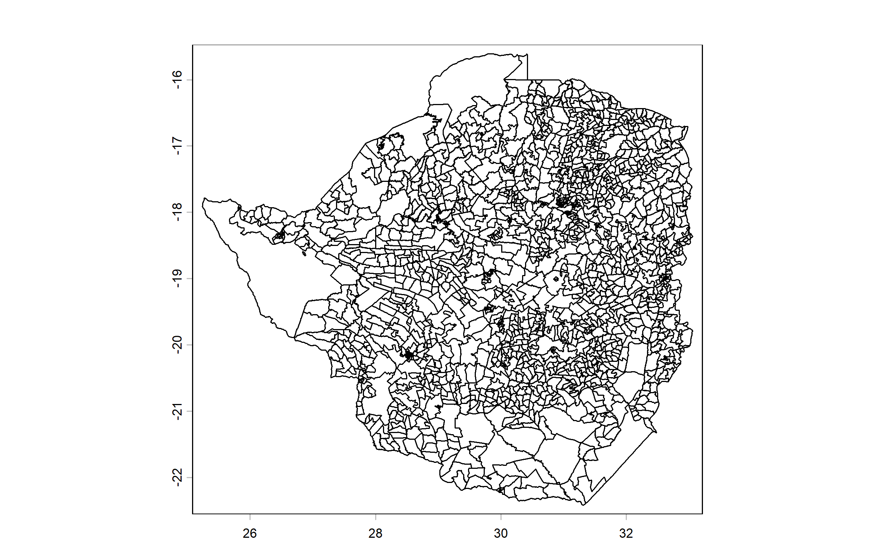
We then subset this shapefile to the district of Mbire.
mbire = zwe3[zwe3$NAME_2 == "Mbire", ]
plot(mbire)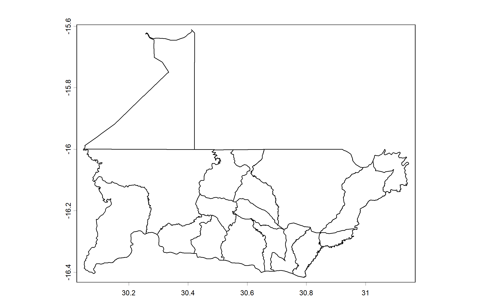
Next, we download a raster of elevation, which we will use as background for the map, again from the R package geodata.
We download the tile corresponding to the study area, using the coordinates of the center of the extent of Mbire.
We give the name ‘elevation’ to that raster.
elevation = elevation_3s(lon = (30.04626 + 31.14537)/2, lat = (-16.41686 + -15.61071)/2,
path = "Geodata")
names(elevation) = "elevation"
plot(elevation)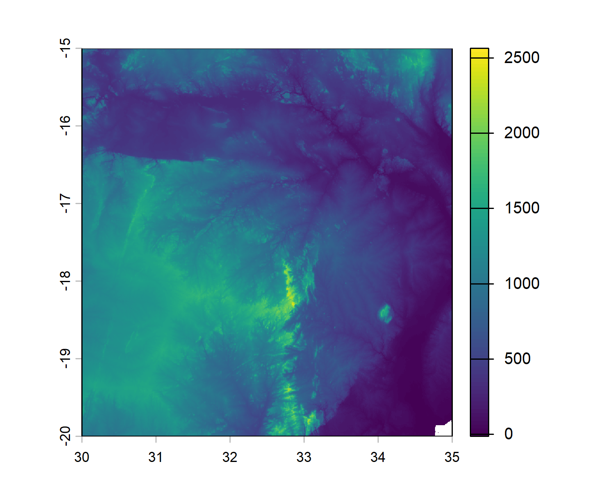
We use the R package terra (Hijmans 2024) for all spatial calculations below.
We use EPSG:4326 coordinate system, and crop our raster to the extent of the area that was surveyed.
elevation = project(elevation, "EPSG:4326")
elevation = crop(elevation, ext(30.2, 30.65, -16.23, -15.97))
plot(elevation)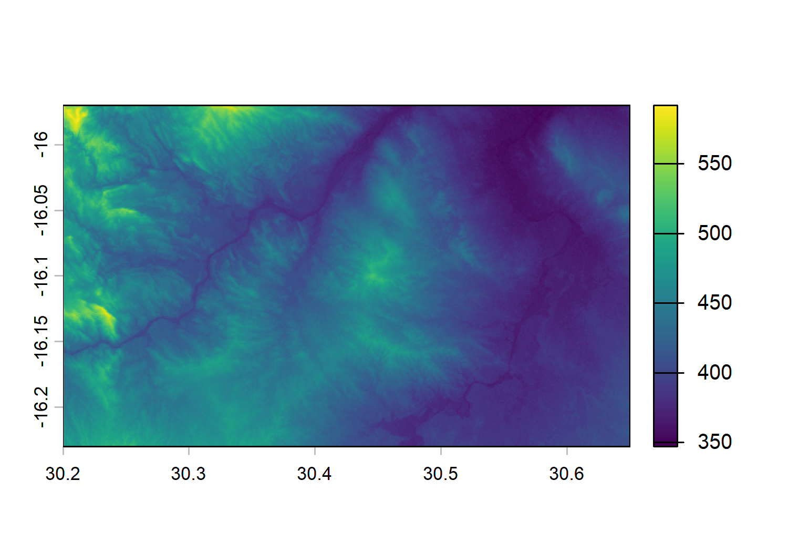
We use the coordinates in the dataframe to produce a shapefile of farm locations.
We ensure to use the same coordinate system as for the elevation raster.
data_vect = vect(data, geom = c("longitude", "latitude"), crs = "EPSG:4326")We extract a shapefile of the 5 wards included in the survey.
wards = mbire[mbire$NAME_3 == "Ward 2" | mbire$NAME_3 == "Ward 3" | mbire$NAME_3 ==
"Ward 9" | mbire$NAME_3 == "Ward 12" | mbire$NAME_3 == "Ward 17", ]
plot(wards)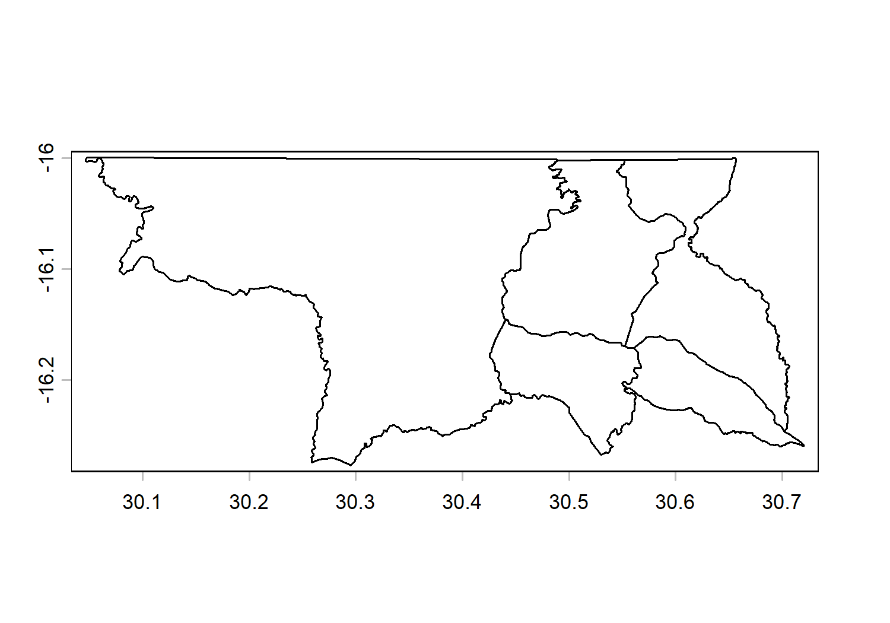
We get the coordinates of the centroid of each of these 5 wards, to use them in our map for the labels of the wards.
We jitter the coordinates of the centroid of Ward 2 (to avoid overlap with surveyed points).
ward_centroids = centroids(wards)
ward_centroids = data.frame(x = crds(ward_centroids)[, 1], y = crds(ward_centroids)[,
2], ward = wards$NAME_3)
ward_centroids$y[ward_centroids$ward == "Ward 2"] = ward_centroids$y[ward_centroids$ward ==
"Ward 2"] - 0.05
ward_centroids$x[ward_centroids$ward == "Ward 2"] = ward_centroids$x[ward_centroids$ward ==
"Ward 2"] + 0.05We enter manually coordinates for a label “MOZAMBIQUE”.
mozambique = data.frame(x = 30.55, y = -15.99, label = "MOZAMBIQUE")We plot the map using the R package ggplot2 (Wickham 2016). Before that, we convert the elevation raster into a dataframe.
We use annotation_scale() and annotation_north_arrow() from the R package ggspatial (Dunnington 2023).
elevation_df = as.data.frame(elevation, xy = TRUE)
ggplot() + theme_bw() + geom_raster(data = na.omit(elevation_df), aes(x = x, y = y,
fill = elevation)) + geom_spatvector(data = mbire, fill = NA, linewidth = 1,
color = "grey30") + geom_spatvector(data = data_vect, shape = 16, color = "#781C6DFF",
alpha = 0.5, size = 3) + geom_text(data = ward_centroids, aes(x = x, y = y, label = ward),
color = "black", size = 4, fontface = "bold") + geom_text(data = mozambique,
aes(x = x, y = y, label = label), color = "black", size = 5, fontface = "italic") +
scale_fill_distiller(palette = "RdYlGn", limits = c(350, 650), breaks = seq(350,
650, by = 75)) + scale_y_continuous(breaks = seq(-16.22, -15.97, by = 0.1)) +
coord_sf(xlim = c(30.2, 30.65), ylim = c(-15.97, -16.23), expand = FALSE) + labs(fill = "Elevation (m.a.s.l.)") +
theme(plot.title = element_blank(), axis.title = element_blank(), axis.text.y = element_text(angle = 90,
hjust = 0.5, size = 12), axis.text.x = element_text(size = 12), legend.title = element_text(size = 14),
legend.text = element_text(size = 12), legend.position = "right", plot.margin = margin(10,
10, 10, 10)) + annotation_scale(location = "bl", width_hint = 0.5, height = unit(0.25,
"cm"), text_cex = 1, pad_x = unit(0.15, "cm"), pad_y = unit(0.15, "cm")) + annotation_north_arrow(location = "tl",
which_north = "true", height = unit(1, "cm"), width = unit(1, "cm"), pad_x = unit(0.15,
"cm"), pad_y = unit(0.15, "cm"), style = north_arrow_fancy_orienteering(text_size = 10))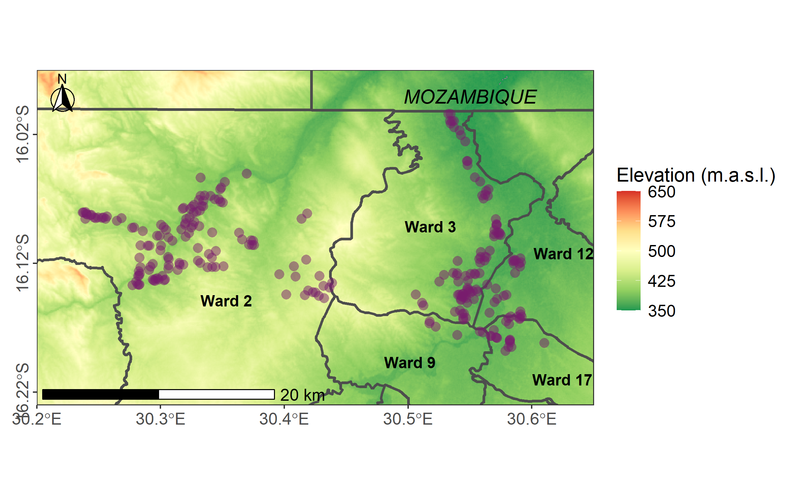
Next, we present key visualizations of survey data: stacked bar chart, lollipop diagram, bubble chart, and pie chart, all using the R package ggplot2.
6.2.2 Stacked bar chart
We will plot perceptions of trends in soil compaction, soil erosion, soil fertility and tree cover.
We create a subset of the dataset, rename variables to have nice labels for the plot, and remove empty rows.
land_mgt = data[, c(115:118)]
names(land_mgt) = c("Soil fertility", "Soil erosion", "Soil compaction", "Tree cover")
land_mgt = na.omit(land_mgt)We transform the dataset from wide to long format using the function gather() from the R package tidyr (Wickham, Vaughan, and Girlich 2024), calculate percentages for each characteristic in each status (‘deteriorating’, ‘stable’, ‘improving’), and reorder the levels of the factor ‘status’ (from ‘deteriorating’ to ‘improving’).
land_mgt = gather(land_mgt, Characteristic, Status, "Soil fertility":"Tree cover")
land_mgt = land_mgt %>%
group_by(Characteristic, Status) %>%
summarise(n = n()) %>%
mutate(Percentage = n/sum(n) * 100) %>%
select(-n) %>%
ungroup()
land_mgt$Status = factor(land_mgt$Status, levels = c("Improving", "Stable", "Deteriorating"))Finally, we plot the stack bar chart.
Note the use of coord_flip().
ggplot(data = land_mgt, aes(x = Characteristic, y = Percentage, fill = Status)) +
geom_bar(stat = "identity", width = 0.7, color = "black") + coord_flip() + theme_bw() +
scale_fill_manual(values = c("#FCFFA4FF", "#ED6925FF", "#781C6DFF")) + theme(axis.title.x = element_text(size = 14,
face = "bold", margin = margin(10, 0, 0, 0)), axis.title.y = element_blank(),
axis.text.x = element_text(size = 10, face = "bold"), axis.text.y = element_text(size = 12,
face = "bold"), legend.title = element_text(size = 14, face = "bold"), legend.text = element_text(size = 12))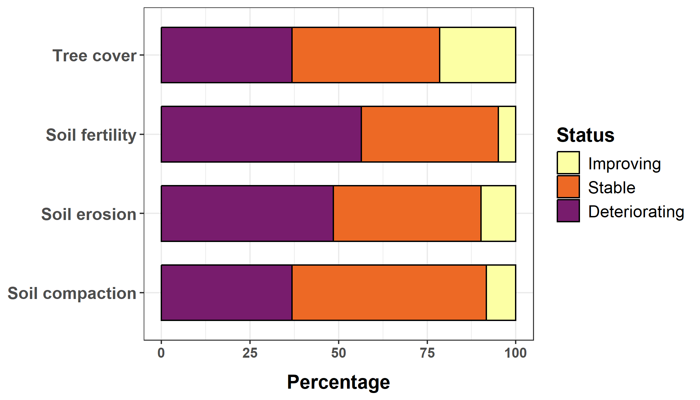
6.2.3 More complex stacked bar chart
We will plot crop area distribution per farm, for all farm surveyed, ordering farms by decreasing total cropped area.
We create a subset of the dataset, correct an abnormal value for area cropped in legume, calculate total cropped area, order the dataset by decreasing cropped area and add an ID.
crop = data[, c(35, 259:261)]
crop$legumes = ifelse(crop$legumes > 5, 0, crop$legumes)
crop$cropped_area = crop$maize + crop$small_grains_area + crop$legumes + crop$other
crop = crop[order(-crop$cropped_area), ]
crop$ID = 1:nrow(crop)Next, we apply a rolling average to the different variables we will use in the plot with subsets of 10 farms to smooth the curves for better visualization/easier interpretation.
crop$maize = frollmean(crop$maize, 10)
crop$small_grains_area = frollmean(crop$small_grains_area, 10)
crop$legumes = frollmean(crop$legumes, 10)
crop$other = frollmean(crop$other, 10)Next, we transform the dataset from wide to long format, and we reorder the levels of the factor crop, for ‘maize’ to appear at the bottom of our plot, and ‘other crops’ at the top.
crop = gather(crop, crop, area, "maize":"other")
crop$crop = factor(crop$crop, levels = c("maize", "small_grains_area", "legumes",
"other"))Finally, we plot the stack bar chart.
crop %>%
ggplot(aes(x = ID, y = area, fill = as.factor(crop))) + geom_bar(stat = "identity",
width = 1, alpha = 0.9, position = position_stack(reverse = TRUE)) + scale_fill_manual(values = c("#FCA50AFF",
"#DD513AFF", "#932667FF", "#420A68FF"), labels = c("Maize", "Small grains", "Legumes",
"Other crops")) + xlab("Farms") + ylab("Area (ha)") + theme_bw() + scale_x_continuous(expand = c(0,
0)) + scale_y_continuous(expand = c(0, 0)) + theme(axis.text.x = element_blank(),
axis.text.y = element_text(size = 12, face = "bold"), axis.title.x = element_text(size = 14,
face = "bold", margin = margin(10, 0, 0, 0)), axis.title.y = element_text(size = 14,
face = "bold", margin = margin(0, 10, 0, 0)), axis.ticks.x = element_blank(),
legend.background = element_rect(color = "black"), legend.title = element_blank(),
legend.text = element_text(size = 12), legend.position = c(0.9, 0.9), legend.justification = c(0.9,
0.9))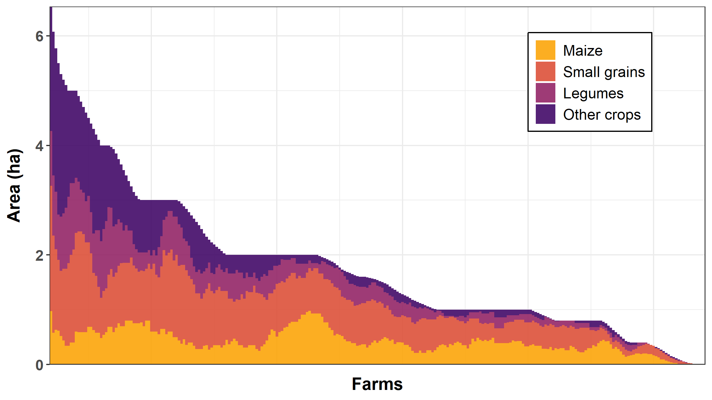
6.2.4 Lollipop diagram
We will plot the frequency of species used as intercrops.
We create a subset of the dataset, and rename variables to have nice labels for the plot.
inter = data[, c(54:62, 284:287)]
names(inter) = c("Common bean", "Cowpea", "Groundnut", "Lablab", "Pigeonpea", "Velvet bean",
"Pumpkin", "Watermelon", "Local cucumber", "Maize", "Rosella", "Sweet sorghum",
"Pearl millet")We transform our dataset from wide to long format, sum the number of occurences by intercrops, and remove zeros.
inter = gather(inter, intercrop, presence, "Common bean":"Pearl millet")
inter = aggregate(presence ~ intercrop, FUN = sum, na.rm = TRUE, data = inter)
inter = subset(inter, presence > 0)Finally, we plot the lollipop diagram.
Note the use of arrange() and coord_flip().
inter %>%
arrange(presence) %>%
mutate(order = factor(intercrop, intercrop)) %>%
ggplot(aes(x = intercrop, y = presence)) + geom_segment(aes(x = order, xend = intercrop,
y = 0, yend = presence), color = "#ED6925FF", linewidth = 1) + geom_point(color = "#ED6925FF",
size = 8, alpha = 0.5) + xlab("Intercrop species") + ylab("Nb of farms") + theme_bw() +
coord_flip() + theme(axis.title.x = element_text(size = 14, face = "bold", margin = margin(10,
0, 0, 0)), axis.title.y = element_text(size = 14, face = "bold", margin = margin(0,
10, 0, 0)), axis.text.x = element_text(size = 12, face = "bold"), axis.text.y = element_text(size = 10,
face = "bold"))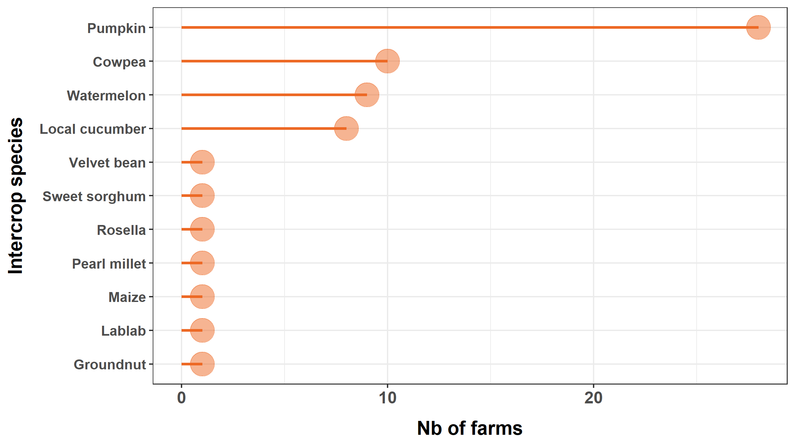
6.2.5 Bubble chart
We will plot the food security status by month of the population of farms surveyed.
We create a subset of the dataset, rename variables to have nice labels for the plot, and remove empty rows.
fsec = data[, c(212:223)]
names(fsec) = c("Nov 2022", "Oct 2022", "Sep 2022", "Aug 2022", "Jul 2022", "Jun 2022",
"May 2022", "Apr 2022", "Mar 2022", "Feb 2022", "Jan 2022", "Dec 2021")
fsec = na.omit(fsec)We transform the dataset from wide to long format, and reorder the levels of the factor ‘status’ and ‘months’ (the former for the data to be displayed from low to high food security, and the latter for data to be displayed in chronological order).
fsec = gather(fsec, month, status, "Nov 2022":"Dec 2021")
fsec$status = factor(fsec$status, levels = c("Low", "Medium", "High"))
fsec$month = factor(fsec$month, levels = c("Dec 2021", "Jan 2022", "Feb 2022", "Mar 2022",
"Apr 2022", "May 2022", "Jun 2022", "Jul 2022", "Aug 2022", "Sep 2022", "Oct 2022",
"Nov 2022"))Finally, we plot the bubble chart.
ggplot(data = fsec) + geom_count(mapping = aes(x = month, y = status), color = "#ED6925FF",
alpha = 0.5) + scale_size_area(max_size = 10) + theme_bw() + xlab("") + ylab("Food security status") +
theme(axis.title.x = element_blank(), axis.title.y = element_text(size = 14,
face = "bold", margin = margin(0, 10, 0, 0)), axis.text.x = element_text(size = 12,
face = "bold", angle = 90, hjust = 1, vjust = 0.5), axis.text.y = element_text(size = 12,
face = "bold"), legend.title = element_text(size = 14, face = "bold"), legend.text = element_text(size = 12))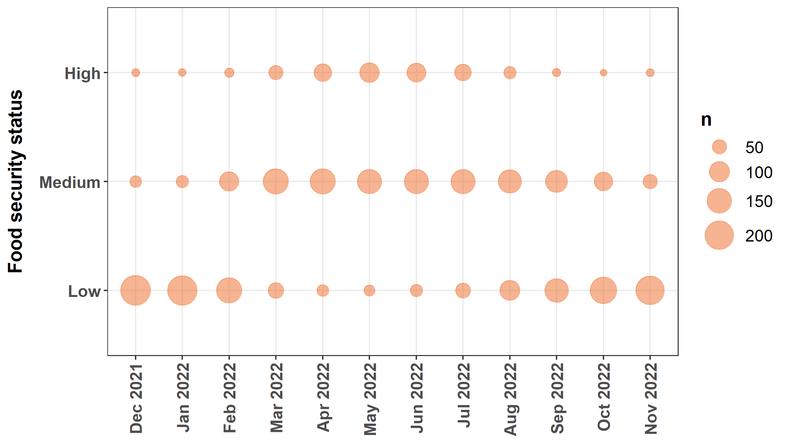
6.2.6 Pie chart
We will plot the average use of maize residues.
We create a subset of the dataset, and rename variables to have nice labels for the plot.
maiz_res = data[, c(125:131)]
names(maiz_res) = c("Burnt", "Retained in the field", "Grazed in the field", "Harvested for feed",
"Harvested for compost", "Harvested for fuel", "Harvested for fencing")We transform the dataset from wide to long format, turn percentage values (then characters) as numeric, calculate the mean percentage for each use, and remove uses for which the percentage is zero.
maiz_res = gather(maiz_res, use, perc, "Burnt":"Harvested for fencing")
maiz_res$perc = as.numeric(sub("%", "", maiz_res$perc))
maiz_res = aggregate(perc ~ use, FUN = mean, na.rm = TRUE, data = maiz_res)
maiz_res = maiz_res[maiz_res$perc > 0, ]Finally, we plot the pie chart.
Note the use of coord_polar() and theme_void().
ggplot(maiz_res, aes(x = "", y = perc, fill = use)) + geom_bar(alpha = 0.5, width = 1,
stat = "identity", color = "black") + coord_polar("y", start = 0) + theme_void() +
scale_fill_viridis_d(option = "B", name = "Maize residue use") + theme(legend.text = element_text(size = 12),
legend.title = element_text(size = 14, face = "bold"), legend.position = "right")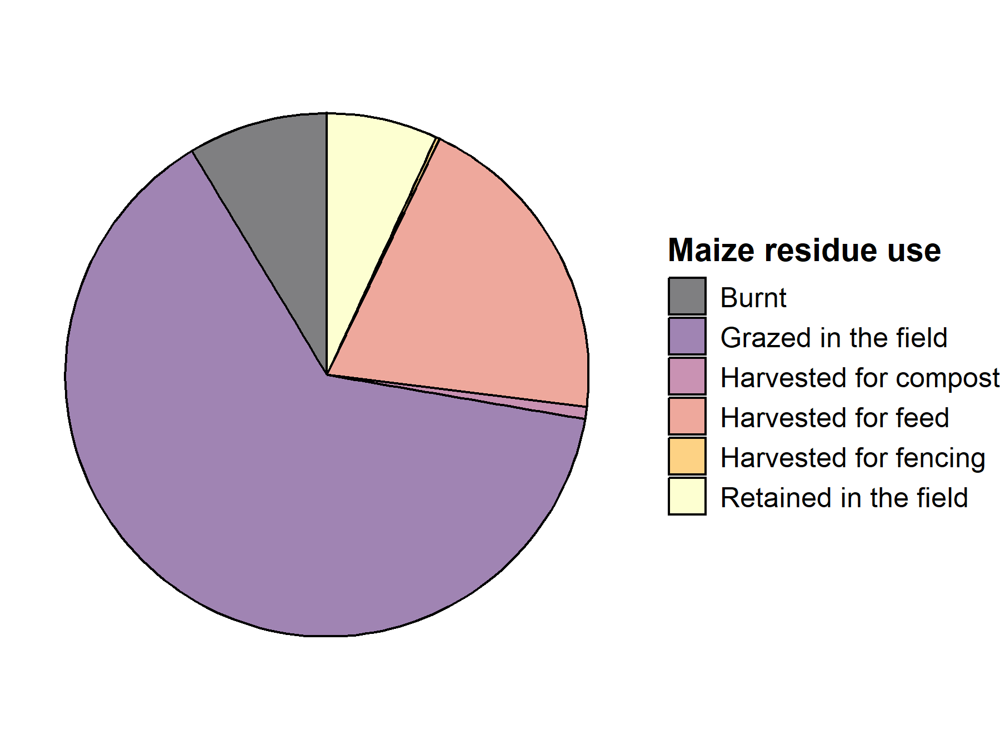
Now that we have built a number of exploratory graphs, we will generate a summary table.
6.2.7 Summary table
Many R packages can be used to generate tables. Here, we will use the R package gtsummary (Sjoberg et al. 2021), in part for the nice rendering on RMarkdown (see below)
We will produce a summary table comparing the two wards from the small dataset created above, using the function tbl_summary().
We display means and standard deviations for continuous variables, with one decimal only, and percentages for categorical variables.
small_dataset[, -c(1, 3)] %>%
tbl_summary(by = ward, statistic = list(all_continuous() ~ "{mean} ({sd})", all_categorical() ~
"{p}%"), digits = all_continuous() ~ 1) %>%
add_overall()| Characteristic | Overall N = 2661 |
Ward 2 N = 1321 |
Ward 3 9 12 17 N = 1341 |
|---|---|---|---|
| how_old_is_the_head_of_the_household | 51.4 (15.7) | 49.7 (16.0) | 53.1 (15.3) |
| what_is_the_sex_of_the_head_of_the_household | |||
| Female | 23% | 21% | 25% |
| Male | 77% | 79% | 75% |
| what_is_the_education_level_of_the_head_of_the_household | |||
| Primary level | 60% | 55% | 65% |
| Secondary level | 36% | 40% | 32% |
| Tertiary level | 1.1% | 0% | 2.2% |
| Vocational school | 2.6% | 4.5% | 0.7% |
| family_size | 5.6 (3.2) | 6.0 (3.6) | 5.3 (2.6) |
| cropped_area | 1.8 (1.5) | 1.5 (1.3) | 2.1 (1.6) |
| fallow | 0.7 (1.4) | 0.6 (1.0) | 0.9 (1.6) |
| prop_non_cereals | 29.9 (29.1) | 30.0 (30.8) | 29.8 (27.5) |
| fertilizers | 87.0 (115.2) | 72.9 (90.9) | 101.0 (133.9) |
| amendment | 304.5 (626.1) | 294.1 (653.2) | 314.8 (600.5) |
| cattle | 4.3 (8.9) | 3.5 (8.7) | 5.2 (9.1) |
| small_rum | 10.4 (20.1) | 9.4 (17.4) | 11.4 (22.5) |
| poultry | 11.7 (29.9) | 10.0 (11.3) | 13.3 (40.6) |
| bee_hives | 11% | 7.6% | 13% |
| ind_garden | 48% | 55% | 40% |
| com_garden | 2.3% | 3.8% | 0.7% |
| main_food_source | |||
| Cash purchase from income | 3.4% | 3.8% | 3.0% |
| Casual labour for food | 18% | 30% | 6.0% |
| Food aid | 3.0% | 5.3% | 0.7% |
| Own production | 75% | 61% | 90% |
| Purchase from cash transfer | 0.4% | 0% | 0.7% |
| Remittances | 0.4% | 0.8% | 0% |
| main_income_source | |||
| Artisan | 0.8% | 1.5% | 0% |
| Casual labour | 35% | 43% | 28% |
| Crop sales | 36% | 28% | 44% |
| Livestock sales | 15% | 9.8% | 20% |
| Pension | 0.4% | 0.8% | 0% |
| Remittances | 5.3% | 7.6% | 3.0% |
| Salary or wages | 3.4% | 5.3% | 1.5% |
| Smallscale mining | 0.4% | 0% | 0.7% |
| Trade | 3.4% | 3.8% | 3.0% |
| food_security | 0.6 (0.3) | 0.5 (0.3) | 0.6 (0.3) |
| hdds | |||
| 1 | 1.1% | 2.3% | 0% |
| 2 | 30% | 12% | 47% |
| 3 | 36% | 47% | 25% |
| 4 | 23% | 28% | 18% |
| 5 | 8.6% | 9.8% | 7.5% |
| 6 | 1.5% | 0.8% | 2.2% |
| 8 | 0.4% | 0% | 0.7% |
| community_seed_banks | 12% | 1.5% | 22% |
| small_grains | 87% | 86% | 87% |
| crop_rotation | 51% | 49% | 53% |
| intercropping | 17% | 11% | 23% |
| cover_crops_for_erosion_control_and_or_soil_fertility | 8.6% | 6.8% | 10% |
| mulching | 9.8% | 9.8% | 9.7% |
| integrated_pest_management_i_e_scouting_etc | 50% | 43% | 57% |
| compost_manure | 17% | 17% | 17% |
| tree_planting_on_farm | 14% | 9.1% | 19% |
| tree_retention_natural_regeneration_on_farm | 37% | 44% | 30% |
| homemade_animal_feeds_made_with_locally_available_ingredients | 26% | 28% | 23% |
| fodder_production_for_ruminants_e_g_velvet_bean_lablab | 4.5% | 4.5% | 4.5% |
| fodder_preservation_for_ruminants_e_g_silage_making | 4.1% | 1.5% | 6.7% |
| survival_feeding_feeding_of_productive_livestock_in_lean_season | 4.5% | 4.5% | 4.5% |
| tot_div | 6.8 (3.7) | 6.7 (3.4) | 7.0 (3.9) |
| cereal_prod | 867.0 (962.0) | 548.5 (464.6) | 1,180.8 (1,196.4) |
| offtake | 0.4 (1.3) | 0.3 (1.0) | 0.4 (1.5) |
| eq_value | 290.0 (689.5) | 206.4 (308.1) | 372.4 (916.5) |
| 1 Mean (SD); % | |||
We add a line ‘type’ to force hdds to be read as a continuous variable.
We add ‘label’ lines to recode variable labels into nicer labels.
We add a column with a statistical test comparing values between the two wards - through the function add_p() - and a column with values for the overall population - with the function add_overall(). We use the option ‘strip’ for the pdf rendering.
small_dataset[, -c(1, 3)] %>%
tbl_summary(by = ward, statistic = list(all_continuous() ~ "{mean} ({sd})", all_categorical() ~
"{p}%"), type = list(hdds ~ "continuous"), digits = all_continuous() ~ 1,
label = list(how_old_is_the_head_of_the_household ~ "Age of the head of the household",
what_is_the_sex_of_the_head_of_the_household ~ "Female-headed households",
what_is_the_education_level_of_the_head_of_the_household ~ "Education of the head of the household higher than primary",
what_is_the_education_level_of_the_head_of_the_household ~ "Family size",
eq_value ~ "Equipment value (USD)", cropped_area ~ "Total cropped area (ha)",
fallow ~ "Fallow land (ha)", prop_non_cereals ~ "Non-cereal crops (% total cropped area)",
fertilizers ~ "Total fertilizer used (kg)", amendment ~ "Total manure + compost used (kg)",
cattle ~ "Cattle (n)", small_rum ~ "Small ruminants (n)", poultry ~ "Poultry (n)",
bee_hives ~ "Bee keeping", ind_garden ~ "Owning an individual garden",
com_garden ~ "Having access to a communal garden", main_food_source ~
"Own production as main source of food", main_income_source ~ "Farming as main source of income",
food_security ~ "Proportion of the year being food secured", hdds ~ "24H household dietary diversity score (0-12)",
community_seed_banks ~ "Using a community seed bank", small_grains ~
"Using small grains", crop_rotation ~ "Using crop rotation", intercropping ~
"Using intercropping", cover_crops_for_erosion_control_and_or_soil_fertility ~
"Using cover crops", mulching ~ "Using mulching", integrated_pest_management_i_e_scouting_etc ~
"Using integrated pest management", compost_manure ~ "Using compost and manure",
tree_planting_on_farm ~ "Planting trees on-farm", tree_retention_natural_regeneration_on_farm ~
"Retaining naturally regenerated trees on-farm", homemade_animal_feeds_made_with_locally_available_ingredients ~
"Using homemade animal feed", fodder_production_for_ruminants_e_g_velvet_bean_lablab ~
"Produccing fodder", fodder_preservation_for_ruminants_e_g_silage_making ~
"Preserving fodder", survival_feeding_feeding_of_productive_livestock_in_lean_season ~
"Using survival feeding", tot_div ~ "Total farm diversity (n species)",
cereal_prod ~ "Total cereal production (kg/yr)", offtake ~ "Total livestock offtake (TLU/yr)")) %>%
add_p(test = list(all_continuous() ~ "kruskal.test", all_categorical() ~ "chisq.test")) %>%
add_overall()| Characteristic | Overall N = 2661 |
Ward 2 N = 1321 |
Ward 3 9 12 17 N = 1341 |
p-value2 |
|---|---|---|---|---|
| Age of the head of the household | 51.4 (15.7) | 49.7 (16.0) | 53.1 (15.3) | 0.036 |
| Female-headed households | 0.6 | |||
| Female | 23% | 21% | 25% | |
| Male | 77% | 79% | 75% | |
| Family size | 0.032 | |||
| Primary level | 60% | 55% | 65% | |
| Secondary level | 36% | 40% | 32% | |
| Tertiary level | 1.1% | 0% | 2.2% | |
| Vocational school | 2.6% | 4.5% | 0.7% | |
| family_size | 5.6 (3.2) | 6.0 (3.6) | 5.3 (2.6) | 0.10 |
| Total cropped area (ha) | 1.8 (1.5) | 1.5 (1.3) | 2.1 (1.6) | <0.001 |
| Fallow land (ha) | 0.7 (1.4) | 0.6 (1.0) | 0.9 (1.6) | 0.2 |
| Non-cereal crops (% total cropped area) | 29.9 (29.1) | 30.0 (30.8) | 29.8 (27.5) | 0.7 |
| Total fertilizer used (kg) | 87.0 (115.2) | 72.9 (90.9) | 101.0 (133.9) | 0.14 |
| Total manure + compost used (kg) | 304.5 (626.1) | 294.1 (653.2) | 314.8 (600.5) | 0.6 |
| Cattle (n) | 4.3 (8.9) | 3.5 (8.7) | 5.2 (9.1) | <0.001 |
| Small ruminants (n) | 10.4 (20.1) | 9.4 (17.4) | 11.4 (22.5) | 0.7 |
| Poultry (n) | 11.7 (29.9) | 10.0 (11.3) | 13.3 (40.6) | 0.4 |
| Bee keeping | 11% | 7.6% | 13% | 0.2 |
| Owning an individual garden | 48% | 55% | 40% | 0.020 |
| Having access to a communal garden | 2.3% | 3.8% | 0.7% | 0.2 |
| Own production as main source of food | <0.001 | |||
| Cash purchase from income | 3.4% | 3.8% | 3.0% | |
| Casual labour for food | 18% | 30% | 6.0% | |
| Food aid | 3.0% | 5.3% | 0.7% | |
| Own production | 75% | 61% | 90% | |
| Purchase from cash transfer | 0.4% | 0% | 0.7% | |
| Remittances | 0.4% | 0.8% | 0% | |
| Farming as main source of income | 0.003 | |||
| Artisan | 0.8% | 1.5% | 0% | |
| Casual labour | 35% | 43% | 28% | |
| Crop sales | 36% | 28% | 44% | |
| Livestock sales | 15% | 9.8% | 20% | |
| Pension | 0.4% | 0.8% | 0% | |
| Remittances | 5.3% | 7.6% | 3.0% | |
| Salary or wages | 3.4% | 5.3% | 1.5% | |
| Smallscale mining | 0.4% | 0% | 0.7% | |
| Trade | 3.4% | 3.8% | 3.0% | |
| Proportion of the year being food secured | 0.6 (0.3) | 0.5 (0.3) | 0.6 (0.3) | 0.022 |
| 24H household dietary diversity score (0-12) | 3.1 (1.1) | 3.3 (0.9) | 3.0 (1.2) | <0.001 |
| Using a community seed bank | 12% | 1.5% | 22% | <0.001 |
| Using small grains | 87% | 86% | 87% | >0.9 |
| Using crop rotation | 51% | 49% | 53% | 0.6 |
| Using intercropping | 17% | 11% | 23% | 0.018 |
| Using cover crops | 8.6% | 6.8% | 10% | 0.4 |
| Using mulching | 9.8% | 9.8% | 9.7% | >0.9 |
| Using integrated pest management | 50% | 43% | 57% | 0.027 |
| Using compost and manure | 17% | 17% | 17% | >0.9 |
| Planting trees on-farm | 14% | 9.1% | 19% | 0.026 |
| Retaining naturally regenerated trees on-farm | 37% | 44% | 30% | 0.024 |
| Using homemade animal feed | 26% | 28% | 23% | 0.4 |
| Produccing fodder | 4.5% | 4.5% | 4.5% | >0.9 |
| Preserving fodder | 4.1% | 1.5% | 6.7% | 0.068 |
| Using survival feeding | 4.5% | 4.5% | 4.5% | >0.9 |
| Total farm diversity (n species) | 6.8 (3.7) | 6.7 (3.4) | 7.0 (3.9) | 0.7 |
| Total cereal production (kg/yr) | 867.0 (962.0) | 548.5 (464.6) | 1,180.8 (1,196.4) | <0.001 |
| Total livestock offtake (TLU/yr) | 0.4 (1.3) | 0.3 (1.0) | 0.4 (1.5) | 0.6 |
| Equipment value (USD) | 290.0 (689.5) | 206.4 (308.1) | 372.4 (916.5) | 0.004 |
| 1 Mean (SD); % | ||||
| 2 Kruskal-Wallis rank sum test; Pearson’s Chi-squared test | ||||
6.3 RMarkdown
RMarkdown is an authoring framework supported by the R package rmarkdown (Allaire et al. 2024) that combines text, code, and outputs (e.g., tables, plots, and results) in a single document. It executes codes (R, Python, etc) and generates high quality reports (pdf, word, html, etc).
You can develop a RMarkdown baseline report while your survey is ongoing: tables, plots and results will update as the dataset gets populated. And you can produce your final baseline report and share it with your partners and donors the same day the last farm is being interviewed!
Here are the codes to generate a simple RMarkdown baseline report with the figures we generated earlier: https://github.com/FBaudron/book_standardized_workflows/blob/main/06-baselining/simple_rmarkdown_baseline_report.Rmd.
And here is the pdf rendered by these codes: https://github.com/FBaudron/book_standardized_workflows/blob/main/06-baselining/simple_rmarkdown_baseline_report.pdf.